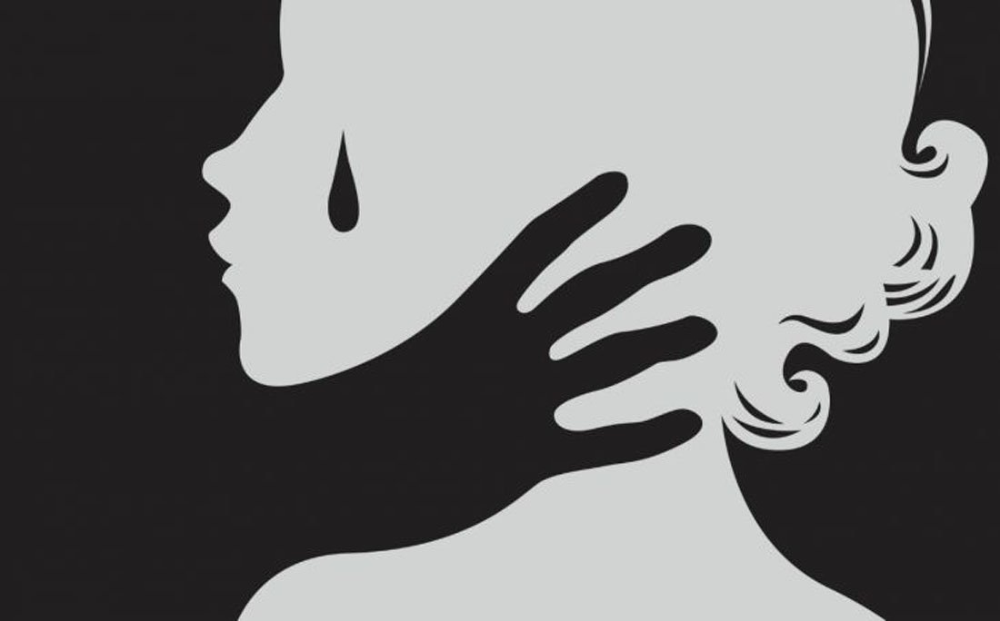
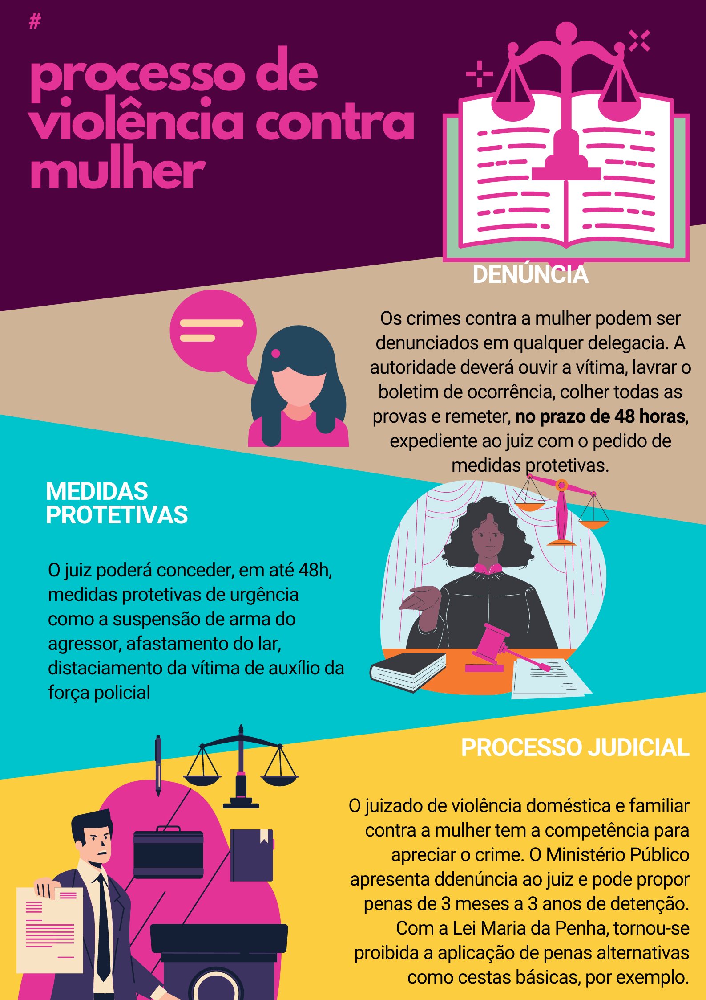

A violência atinge mulheres de todas as idades, independentemente da classe econômica, do país onde vivem e até mesmo da cultura ou crença. Em geral, é resultado da ideia de que a mulher deve ser submissa ao homem.
As agressões podem manifestar-se de diferentes formas: física( Maus tratos e espancamento); sexual (abuso); e psicológica(xingamentos e ameaças), dentro e fora da família.
No Brasil, entre os tipos de agressão contra mulher são mais comuns queixas de violência física, seguida da psicológica e do sexo forçado, cometidos pelo próprio companheiro,além dos casos de abusos sexuais praticados por homens com os quais tiveram contato desde a infância até a idade adulta.
As agressões físicas e o abuso sexual de refletem diretamente na saúde das mulheres. Na maioria dos casos, eles são vítimas de doenças sexualmente transmissível, gestação indesejadas e transtornos emocionais, que vão desde problemas com a autoestima até a depressão. Muitas vezes, esse tipo de agressão ocorre em relacionamentos considerados estáveis, como o casamento. São comuns os casos de mulheres casadas que são forçadas a ter relação sexuais sem preservativos, expondo-se aos riscos do sexo inseguro; muitas delas até mesmo temem a reação do parceiro ao pedirem pelo uso de preservativo.
Além da violência contra mulher cometida por seus parceiros, existem os casos de abusos sexuais na infância e na adolescência, que ocorrem dentro e fora do ambiente familiar.
Acabar com as agressões contra a mulher exige campanhas de conscientização, igualdade de direitos e emancipação feminina. Vários governos têm estimulado a criação de políticas públicas visando a propiciar suporte jurídico à mulher, assim como campanhas de conscientização que façam muitas mulheres perceber que a violência não é uma condição para a vida delas, ou seja, que cada uma pode e deve buscar seus direitos e denunciar os agressores.
No Brasil, um dos grandes avanços da legislação em favor da mulher foi a Lei Maria da Penha, promulgada em agosto de 2006, que cria mecanismo para impedir a violência doméstica e familiar contra a mulher.
A Secretaria de Políticas para Mulheres (SPM) registrou, apenas no ano de 2009 quase 41 mil relatos de violência contra a mulher em sua Central de Atendimento.
Em todos país, dos 5.565 municípios existentes, apenas 397 contam com delegacias de política especializadas no atendimento à mulher. Desse total, 120 estão no estado de São Paulo e 49 em Minas Gerais.total de municípios brasileiros, apenas 74 possuem atendimento judicial especializado em violência doméstica e familiar contra mulher. São Paulo e Minas Gerais São estado que contam com esse serviço; no Distrito Federal e no Amapá ele não existe.
Na contramão de várias conquistas femininas no que diz respeito a direitos na legislação Brasil, à inserção no mercado de trabalho, à indecência financeira, à equiparação com o sexo masculino na profissão e ao aumento no nível de escolaridade, entre outros, as mulheres continuam sendo agredidas por companheiros ou ex companheiros. Os dados são alarmantes. De acordo com a Fundação Perseu Abramo, uma em cada cinco brasileiras já foi agredida por um homem. Por ano, cerca de 2,1 milhões de mulheres são espancadas, uma em cada 15 segundos
É muito importante que as mulheres se conscientizem e denunciem qualquer tipo de agressão ou abuso. As denúncias podem ser feitas nas delegacias da mulher ou pelo telefone da Central de Atendimento à Mulher, pelo número 180. Além da delegacia da mulher, o país tem municípios com casas abrigo, centro e núcleos especializados em atendimento à mulher e, até mesmo, Juizados de violência doméstica e familiar contra a mulher
A Lei n11.340 de 7 de agosto de 2006, conhecida popularmente como Lei Maria da Penha, foi sancionada pelo presidente Luiz Inácio Lula da Silva em agosto de 2006 e entrou em vigor no mês seguinte, alterado significativamente a forma como os casos de violência doméstica são tratados no Brasil.
Entro às principais mudanças previstas nessa lei está a de que o agressor pode ser preso em flagrante ou ter a prisão preventiva decretada; essas penas não podem mais ser pagas com cestas básicas ou multas.
Também são asseguradas na lei assistência e proteção às mulheres e seus familiares, inclusive com o afastamento imediato do agressor. Antes dessa lei, à mulher agredida se via obrigada a mudar-se para evitar outras agressões durante o processo de separação.
O nome da lei é uma homenagem à farmacêutica cearence Maria da Penha Maia Fernandes, vítima de violência doméstica e símbolo das mulheres que lutem pela punição de seus agressores. Em 1983, por duas vezes, o marido de Maria da Penha tentou matá-la e a deixou paraplégica. O agressor foi condenado a oito anos de prisão, mas recorreu; preso em 28 de outubro de 2002, cumpriu apenas dois anos de reclusão
Em 2009, entrou em vigor a Lei n12.015, que altera o Código Penal e a lei sobre crimes hediondos, com objetivo de tornar mais severa a pena para crimes de estupro, pedofilia e assédio sexual de menores.
Antes, O crime de estupro, Segundo o art. 213, do Código Penal, ocorria apenas nos casos de conjunção carnal, ou seja, quando havia penetração do órgão sexual masculino no feminino, por meio da violência ou ameaça. Assim, só as mulheres poderiam ser vítimas de estupro.
Já o sexo oral, o sexo anal e outras ações de assédio, conhecidos como atos libidinosos, eram chamados de atentado violento ao pudor e estavam sujeitos a penas menos rigorosas( artigo 214 do Código Penal) . Nesses casos, o homem também poderia ser vítima.
Com a nova Lei, Tanto conjunção carnal quanto os dados libidinosos são considerados estupro, E a pena varia de seis a 10 anos de prisão. Nos casos em que o estupro resulta lesão corporal grave ou se a vítima menor de 18 anos, a pena sobe, podendo ser de oito a 12 anos. A lei prevê ainda os casos em que o ato resulta em morte, aumentando a punição, que pode ser de 12 a 30 anos de detenção.
Além de acarretar transtornos psicológicos as vítimas, O estupro traz risco de doenças sexualmente transmissíveis e, no caso das mulheres, podem gerar uma gravidez indesejada. Portanto, em caso de estupro:
- É de extrema importância se dirigir a uma delegacia de polícia ou procurar uma delegacia da mulher para registrar o crime. Nesses locais, são oferecido as informações necessárias sobre como agir como fazer o exame Médico Legal.
- portar os principais documentos, se possível
- delatar o agressor, dizendo seu nome endereço, quando for conhecido. Se for desconhecido, qualquer detalhe da aparência poderá ajudar na identificação.
- procurar o quanto antes atendimento médico, para evitar ao máximo os prejuízos à saúde.
- Não jogar fora as roupas usadas durante o estupro; É importante levar-las para delegacia no momento da denúncia. Dependendo no município e do caso,A vítimas será encaminhada a um atendimento hospitalar conveniado.
Além disso, Como medida de prevenção, É importante ficar atento e observar o comportamento de familiares, como pais, namorado, marido, parentes e vizinhos. Isso porque, em geral, os estupros realizado por pessoas próximas não acontecem de repente. Em muitos casos, existe um histórico de insinuações um ameaças por parte do agressor.
É preciso dirigir-se a delegacia mais próxima e registrar boletim de ocorrência e para denunciar o crime o quanto antes e não perder as provas. As unidades das delegacias da mulher oferecem atendimento especializado as vítimas
As Delegacias Especiais da Mulher (DEMS) ou Delegacias Especializas de Atendimento à Mulher ( DEAMs) São Distritos policiais especializados no atendimento a mulheres vítimas de violência ou discriminação. Eles oferecer serviços específicos que atuam como instrumento de garantia dos direitos femininos. A maioria dessas delegacias extrapola o cotidiano policial, com serviços de aconselhamento, mediação e apoio comunitário.
A primeira unidade surgiu em São Paulo, em 1985. Somente na cidade de São Paulo, as unidades delegacia da mulher registraram cerca de 30.000 queixas em 2009. Em geral, os principais crimes denunciados em todo Brasil são espancamentos, Lesão corporais, ameaças, ofensas, Como calúnia, difamação e Injúria. atentado violento ao pudor e estupro.
Embora as leis contra a violência feminina tem evoluído bastante desde a criação da primeira unidade da delegacia da mulher, O índice de vítimas que denunciou a violência doméstica de seus companheiros, mas não mantém a queixa para que o processo seja encaminhado ao Judiciário, é alto, A maioria das vítimas não leva casa diante, temendo uma nova e mais severa punição dos agressores. A cada 10 mulheres vítimas de agressão, sete voltam a viver com seus companheiros.
As informações prestadas em depoimento nas delegacias da mulher são mantidas em sigilo; além disso, tomam- se as providências necessárias para o auxílio a vítima afim de solucionar as denúncias e punir o agressor.

O número de mulheres encarceradas está aumentando no Brasil. De acordo com informações do Departamento Penitenciário Nacional, A população prisional feminina no final do ano de 2005 era de 20.264 mulheres. Ao final do ano de 2009 esse número já havia subido para 31.401.
Entre os vários fatores que tem levado as mulheres a prisão está o tráfico de drogas - na maioria das vezes, Uma atividade prestada aos pais, namorados ou companheiros das condenadas.
Assim como os homens, as mulheres encarceradas tem de enfrentar a distância da família e, muitas vezes, Dos filhos ainda pequenos. Também precisam suportar condições extremas, Como se celas lotadas, além de ter seus direitos poucos respeitados.
A Lei número 7210, de 1984, mais conhecida como lei execução Penal, Também trata dos direitos das mulheres presas Garantindo as gestantes acompanhamento médico no pré-natal e no pós parto, estendido também para recém-nascidos. Segundo essa lei, os estabelecimentos prisional que recebe mulheres deve possuir berçários para que a mãe possa cuidar de seu filho e amamentá-lo pelo menos até o seis meses. Além disso, precisa ver uma creche para abrigar as crianças maiores de seis meses e menores de sete anos desamparadas, ou seja, que não possuem nenhum responsável para tomar conta, além da mãe que está presa.
Se você é neutro em situações de injustiça, você escolhe o lado do opressor. Sua vida começa quando a violência termina
Ligue 180
Além do número de telefone 180, é possível realizar denúncias de violência contra a mulher pelo aplicativo Direitos Humanos Brasil e na página da Ouvidoria Nacional de Diretos Humanos (ONDH) do Ministério da Mulher, da Família e dos Direitos Humanos (MMFDH), responsável pelo serviço. No site está disponível o atendimento por chat e com acessibilidade para a Língua Brasileira de Sinais (Libras).
Também é possível receber atendimento pelo Telegram. Basta acessar o aplicativo, digitar na busca “DireitosHumanosBrasil” e mandar mensagem para a equipe da Central de Atendimento à Mulher – Ligue 180.
É possível fazer a ligação de qualquer lugar do Brasil e de mais 16 países no exterior.
Quais os horários de atendimento do Ligue 180?
O Ligue 180 funciona diariamente durante 24h, incluindo sábados, domingos e feriados. O serviço manteve os atendimentos durante a pandemia da Covid-19. Em todas as plataformas, as denúncias são gratuitas, anônimas e recebem um número de protocolo para que o denunciante possa acompanhar o andamento.